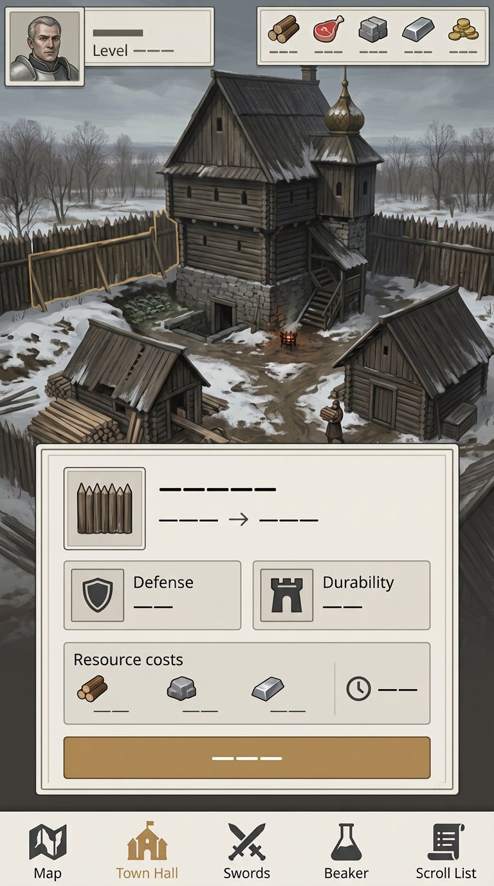
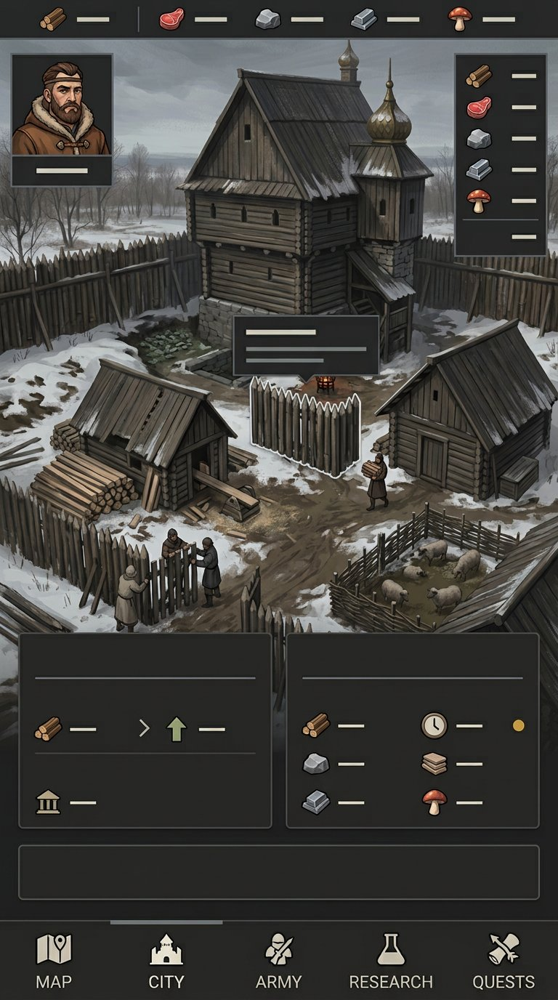
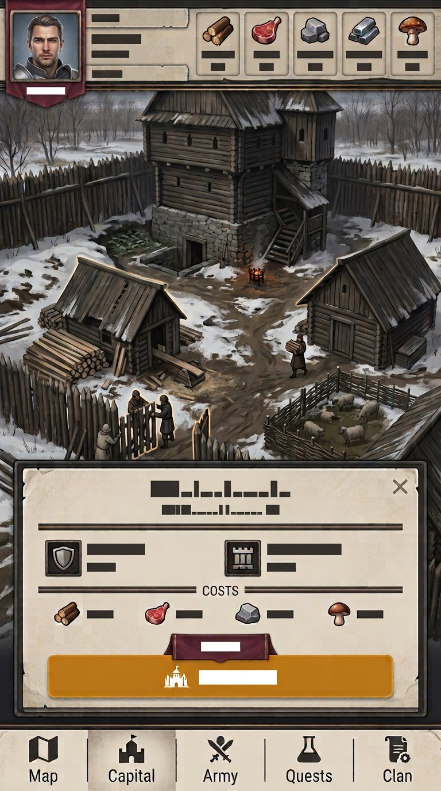
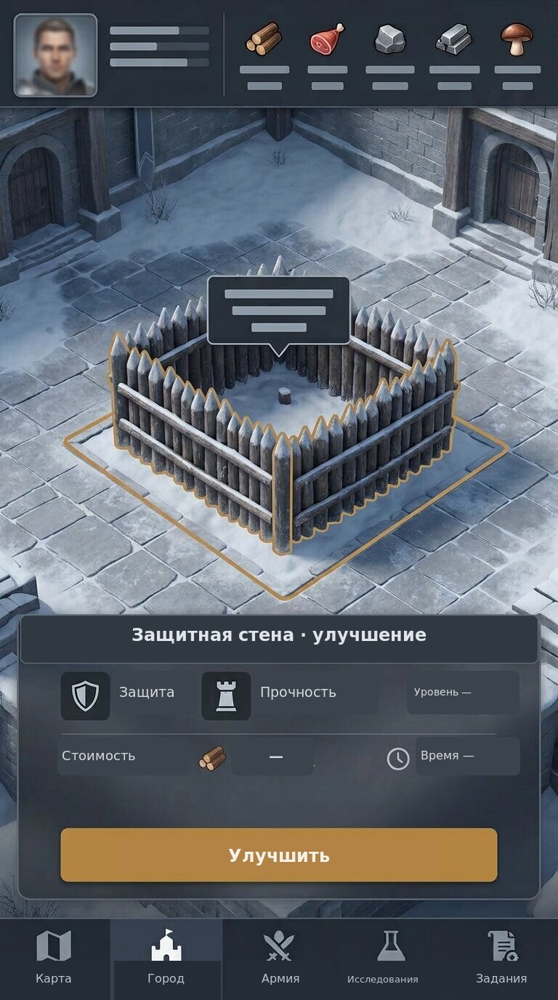
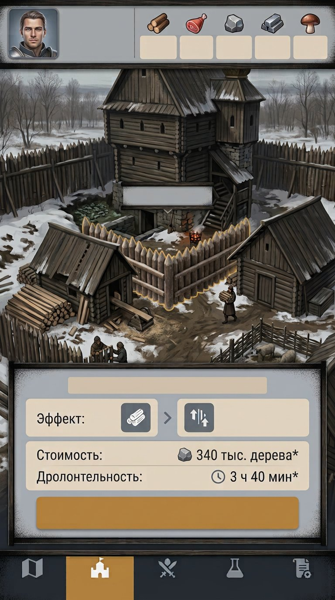
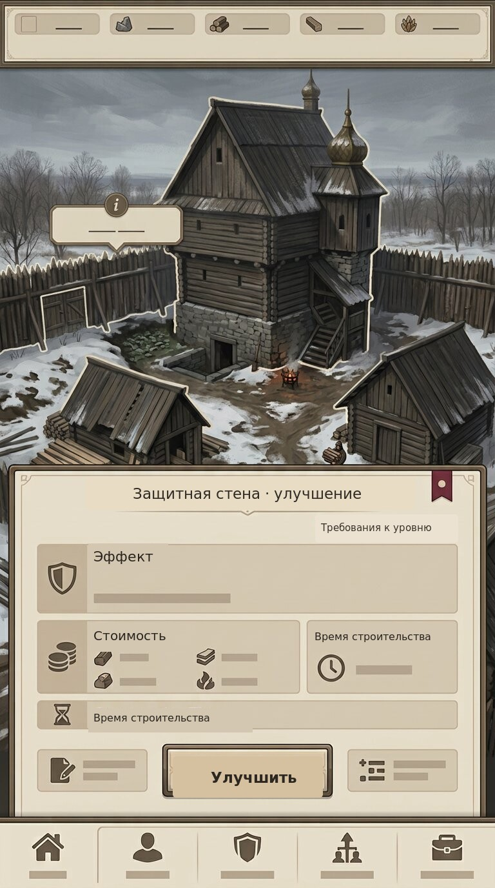
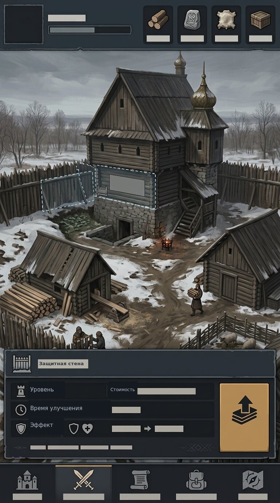
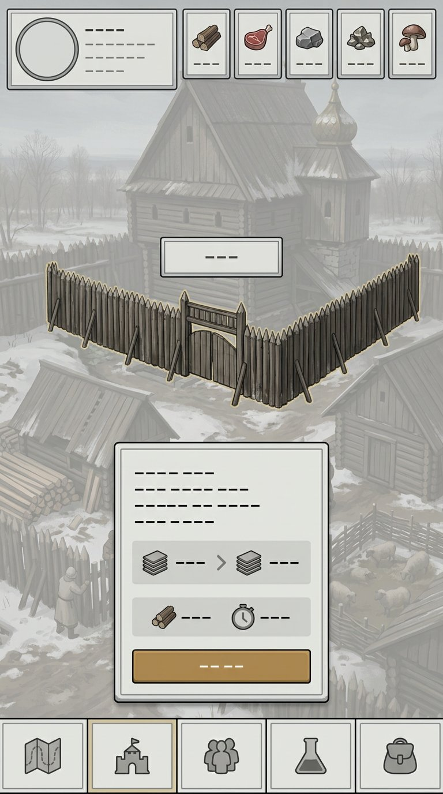
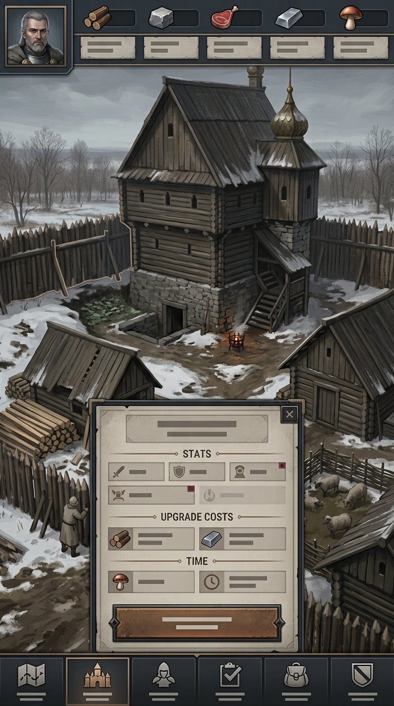
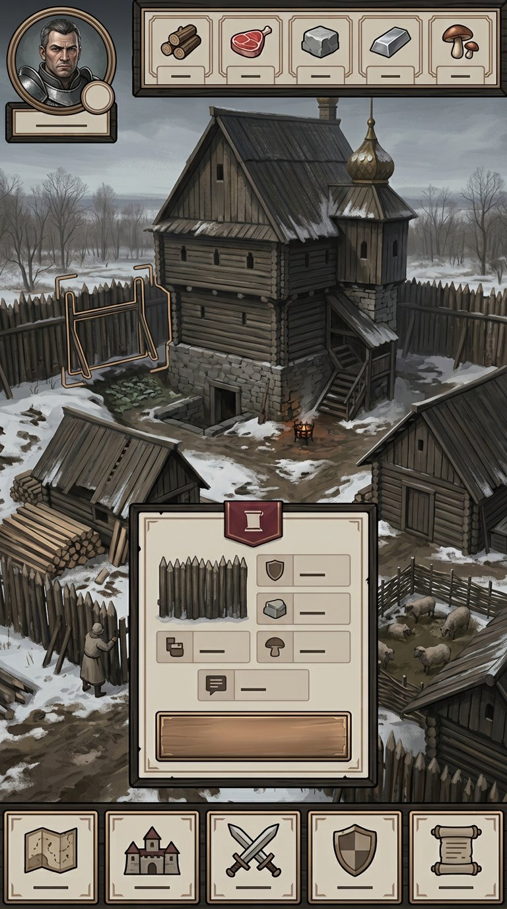

Светлый камень и охра
Светлые панели, широкие поля и охристый акцент на главном действии.
The Dead Lords · визуальные направления · раунд 02
Сравнение одной игровой ситуации: зимний двор, выбрана защитная стена, открыта панель улучшения. Варианты отличаются композицией, формой панелей, контрастом и материалами — это самостоятельные концепты, а не перекраска одного шаблона.

Светлые панели, широкие поля и охристый акцент на главном действии.

Плотные тёмные панели, светлая рабочая зона и короткие полосы ресурсов.
Заметка «Не развалилось. Уже неплохо.»

Светлая каменная основа, бордовые вкладки и сдержанные бронзовые линии.

Отдельная площадка сразу выделяет выбранную защитную стену и её контур.
Заметка «Стена на месте. Снег тоже.»

Тёмная деревянная рамка окружает светлые блоки, а двор остаётся на виду.

Большая светлая карточка собирает защиту, стоимость и время в отдельные блоки.

Компактная таблица статусов экономит место и оставляет сцену открытой.
Заметка «Дерево на месте. Мир — как обычно.»

Светлая карточка, тонкая рамка и много свободного пространства вокруг неё.

Матовые тёмные панели и редкий бордовый акцент; показатели собраны снизу.

Центральное окно оставляет двор видимым и собирает действия вокруг одного выбора.
Заметка «План сработал. Запишем, как повторить.»